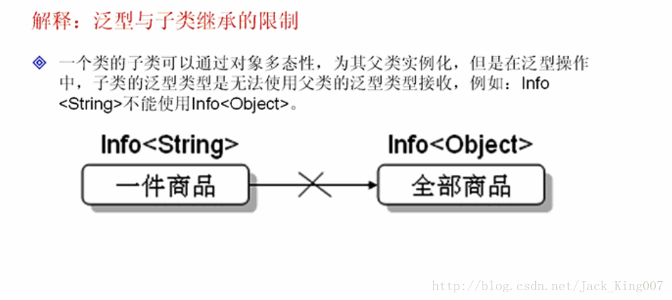
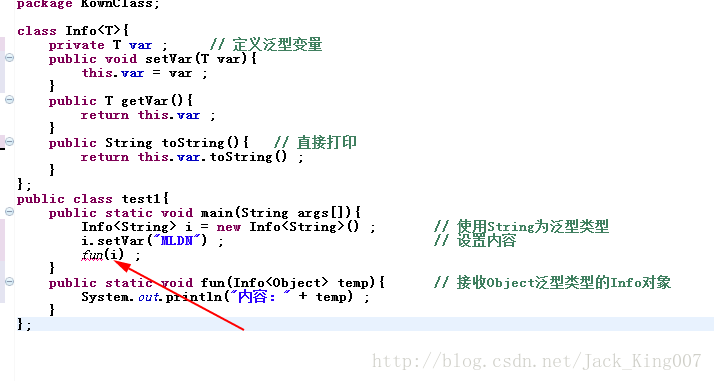
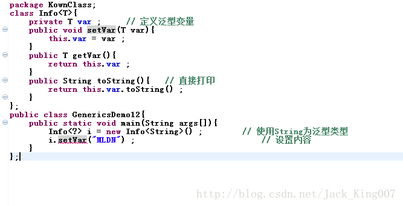
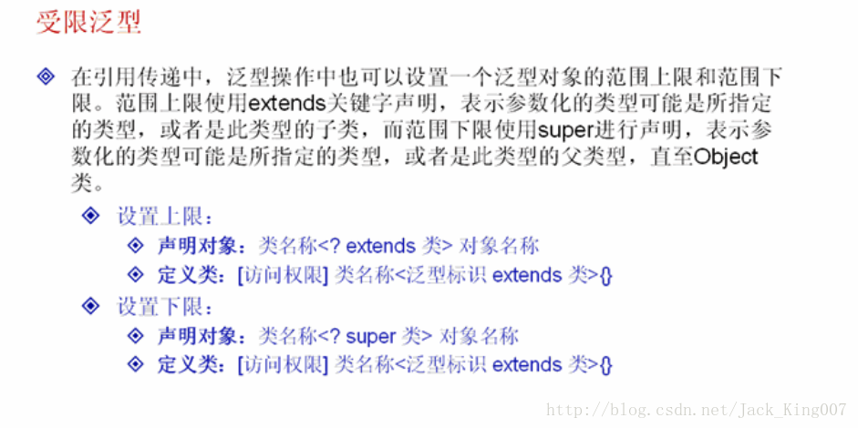
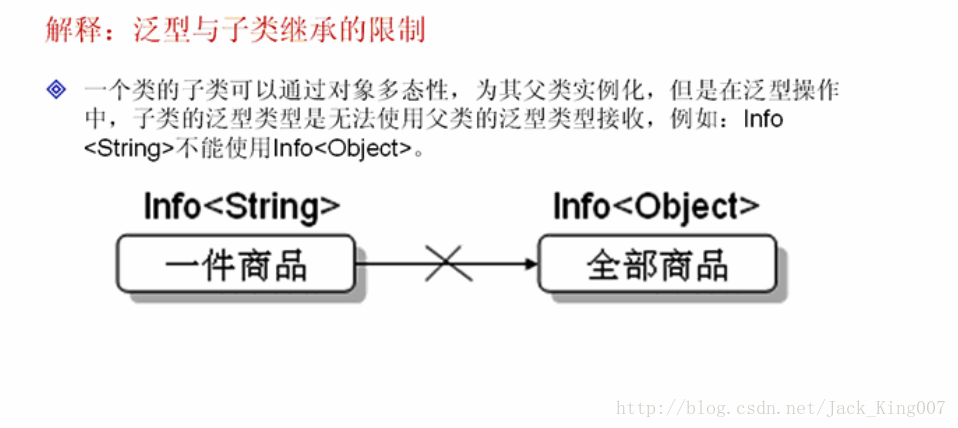
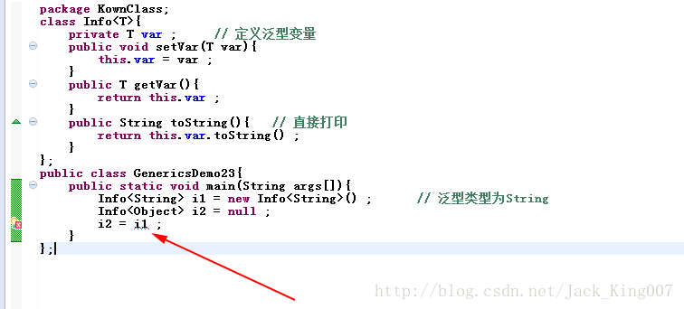

java15高新知识之泛型（2）
掌握通配符?的使用
（1）匹配任意类型的通配符
在开发中对象的引用传递时最常见的 但是如果在泛型类中操作中
你也可以使用通配符 但是

（1）匹配任意类型的通配符
在开发中对象的引用传递时最常见的 但是如果在泛型类中操作中
在进行应用传递的时候泛型类型必须匹配才可以传递，否则是无法传递的

如果将fun改成 Info<String> 就可以使用泛型了
public static void fun(Info<String> i){ // 接收Object泛型类型的Info对象
System.out.println("内容：" + i) ;
}你也可以使用通配符 但是

通配符只能接受不能修改
（2）受限泛型
之前泛型设置泛型类型的时候，实际上都是可以任意设置的，只要类就可以设置但是在java的泛型是可以设置上限和下限的

设置上限
package KownClass;
class Info<T>{
private T var ; // 定义泛型变量
public void setVar(T var){
this.var = var ;
}
public T getVar(){
return this.var ;
}
public String toString(){ // 直接打印
return this.var.toString() ;
}
};
public class GenericsDemo17{
public static void main(String args[]){
Info<Integer> i1 = new Info<Integer>() ; // 声明Integer的泛型对象
Info<Float> i2 = new Info<Float>() ; // 声明Float的泛型对象
i1.setVar(30) ; // 设置整数，自动装箱
i2.setVar(30.1f) ; // 设置小数，自动装箱
fun(i1) ;
fun(i2) ;
}
public static void fun(Info<? extends Number> temp){ // 只能接收Number及其Number的子类
System.out.print(temp + "、") ;
}
};注意点是 只能接受NUmber的子类或者number类
设置下限
但使用泛型只能在父类其父类类型上应用的时候 必须使用泛型的范围下限配置
package KownClass;
class Info<T>{
private T var ; // 定义泛型变量
public void setVar(T var){
this.var = var ;
}
public T getVar(){
return this.var ;
}
public String toString(){ // 直接打印
return this.var.toString() ;
}
};
public class GenericsDemo21{
public static void main(String args[]){
Info<String> i1 = new Info<String>() ; // 声明String的泛型对象
Info<Object> i2 = new Info<Object>() ; // 声明Object的泛型对象
i1.setVar("hello") ;
i2.setVar(new Object()) ;
fun(i1) ;
fun(i2) ;
}
public static void fun(Info<? super String> temp){// 只能接收String或Object类型的泛型
System.out.print(temp + "、") ;
}
};
